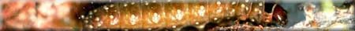
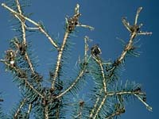
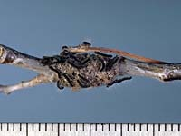

Symptoms of Insects and Disease Attack
|  Spruce Budworm damage
| Most insects and mites can be categorized into one of five main groups according to the way in which they injure trees: defoliators, borers, sucking insects and mites, gall-makers, and rootfeeders. |
Tree diseases result from parasites, such as fungi, bacteria, and viruses, or as a result of nutrient imbalance, toxic chemicals, adverse weather, and other stress-producing conditions, such as mechanical injuries and changes in soil and water levels.
Visible signs of attack by insects or disease
|  Newly hatched Forest Tent Caterpillars
|
|
It is important to be aware that not all tree injuries are caused
by insects and diseases. Damage may also be caused by birds (sapsuckers)
and rodents, such as mice, rabbits, and squirrels.
What am I?
Can you guess what kind of pest I am by my description? Click a choice to see if you are correct.
- I like to eat almost all parts of the tree, especially the
inside.
defoliator - borer - sucking insect or mite - gall-maker - root-feeder
- I like to eat leaf tissue, thus destroying the leaves of a
tree.
defoliator - borer - sucking insect or mite - gall-maker - root-feeder
- I attack the tree from below the ground, disabling the
plant from absorbing nutrients.
defoliator - borer - sucking insect or mite - gall-maker - root-feeder
- I cause protective ball of cells to form around the area of
the tree that I have harmed.
defoliator - borer - sucking insect or mite - gall-maker - root-feeder
- I can have long mouthparts, perfect for reaching into the tree
to suck sap.
defoliator - borer - sucking insect or mite - gall-maker - root-feeder
Defoliators destroy leaf tissue. They may be leaf chewers and consume all the leaf tissues. Defoliators could be leaf skeletonizers, specializing in eating the soft outer tissues of leaves but leaving a skeletal network of veins or leaf miners, feeding upon the succulent interior tissues while tunnelling between the upper and lower surfaces of the leaves.
Borers work mainly in the inner bark and wood, but all parts of the tree, from the buds to the roots, are subject to attack. The main effects of borer activity are deformity of the parts affected and weakening of the supporting fibres.
Sucking insects and mites extract the cell sap, causing a general devitalizing, wilting, distortion, or discolouring of the parts attacked.
Gall-makers cause plants to produce abnormal growths as a reaction to irritations or stimuli such as feeding, stinging, egg-laying, or injections of toxins. Galls usually have a characteristic shape and location on the host, but, in spite of their often conspicuous appearance, most affect the appearance rather than the health of the trees.
Root-feeders destroy the tissues whereby
the plant absorbs the nutrients necessary for its sustenance and
growth.